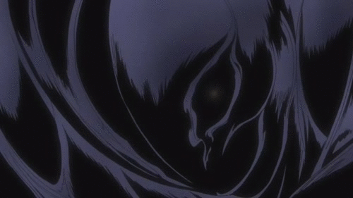

<!-- todo lo que va entre el tag <a> es un link, esto hace que la imagen sea clickeable --> 
<!-- href es el link al que te lleva, text-decoration none saca la linea que suele ir bajo los links (se ve mas clean así)--> 
<a href="template-landing-1.html" style="text-decoration: none; color: white;"> 

    

    <p class="landing-text">Click the image to enter the project</p>
    
</a>
<style>
    /* NO SÉ POR QUÉ ACÁ SE AGREGAN COMENTARIOS ASÍ PERO ARRIBA ASÍ <!-- --> creo que porque esto ya es CSS */
    /* en el body se establecen las reglas de toda la página para evitar agregar de forma manual en cada bloque nuevo el estilo deseado*/
    body {
        background-color: black;    /* Sets the whole page to black */
        color: white;               /* Sets all text to white */
        font-family: 'playfair';    /* Uses a clean, modern font */
        margin: 40px;               /* Adds space around the edges of the page */
        line-height: 1.6;           /* Adds space between lines of text for readability */
    }    
    .landing-image {
        display: block;      /* fuerza a que la imagen definida como landing-image sea un bloque y no una linea */
        margin: 100px auto 20px auto; /* esto en realidad sería 100px ARRIBA, auto ABAJO, 20px DERECHA, auto IZQUIERDA */
                                      /* auto es la forma clásica de CENTRAR un bloque*/
        max-width: 500px;    /* buen tamaño máximo para la imagen, así no se ve GIGANTE en un monitor grandote */
        cursor: pointer;     /* cambia el cursor a una manita */
        transition: 0.3s;    /* se toma 3 segundos en animar el efecto de hover (que se agrande) - este efecto está definido más abajo */
    }

    .landing-image:hover {
        opacity: 0.7;        /* le baja la opacidad a la imagen (la hace más transparente) */
        transform: scale(1.02); /* hace que la imagen se haga levemente más grande */
    }

    .landing-text {
        text-align: center;  /* alinea el texto en el centro */
        font-size: 1.2em;   /* em es "tamaño relativo*, o sea 1.2 es 20% mas grande que el tramaño estandar de texto */
        letter-spacing: 2px; /* agrega algo de espacio entre las letras, lo hace un poco más liviano todo */
    }

    /* muchas de estas decisiones las tomo la IA por mí, no sé como se vería si se sacan esos detalles que hacen que todo sea mas fancy y limpio */
    /* según Gemini los diseñadores le llaman a esos detalles "Micro-interactions" y "Whitespace Management*/
</style>
